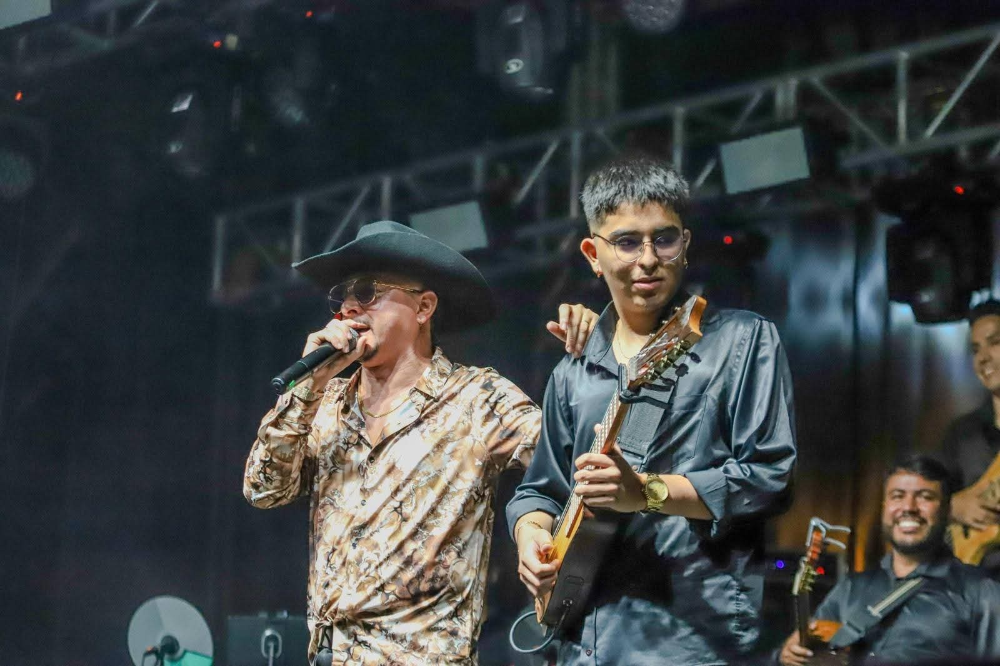
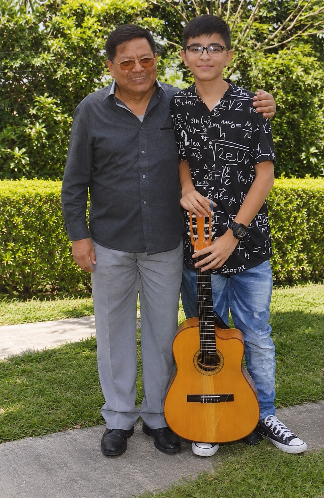
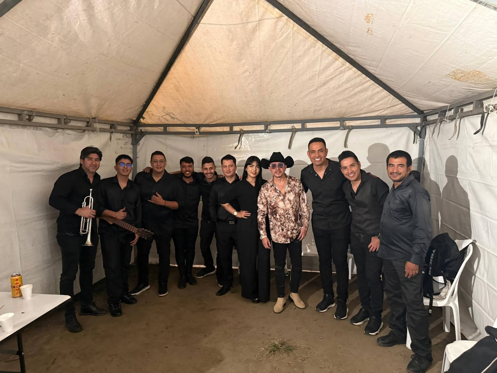
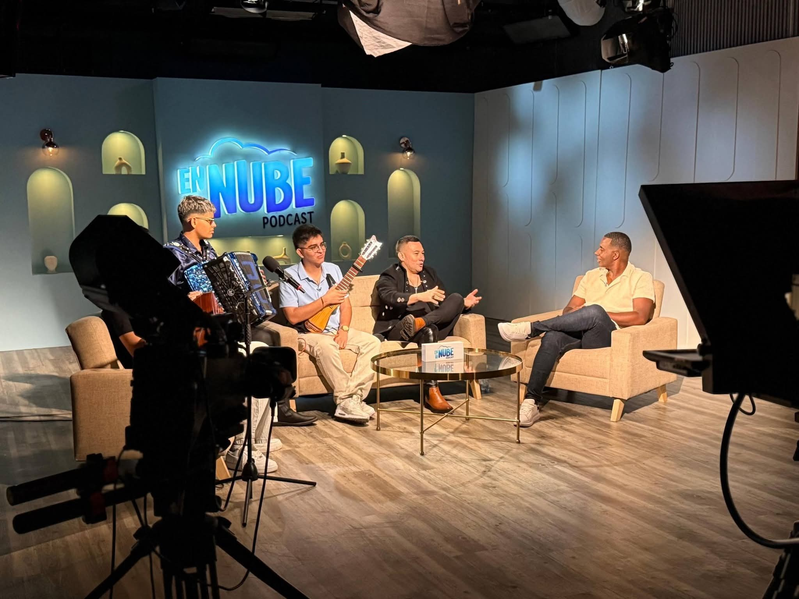
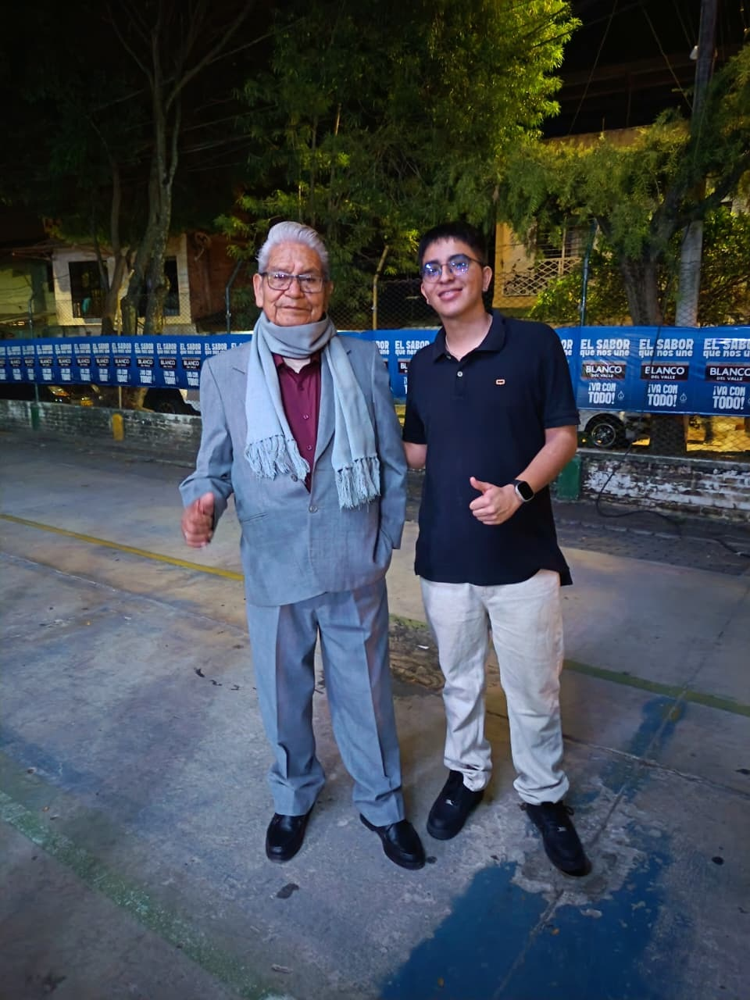
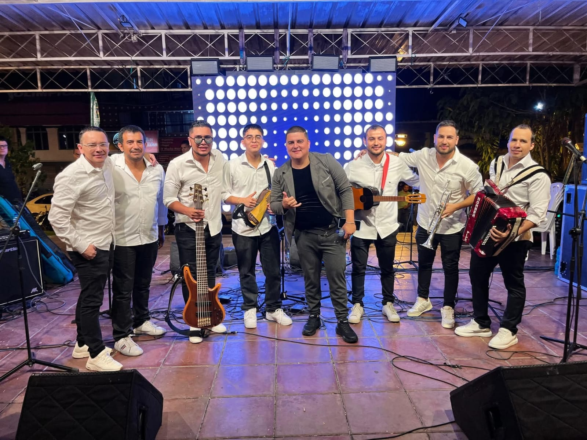
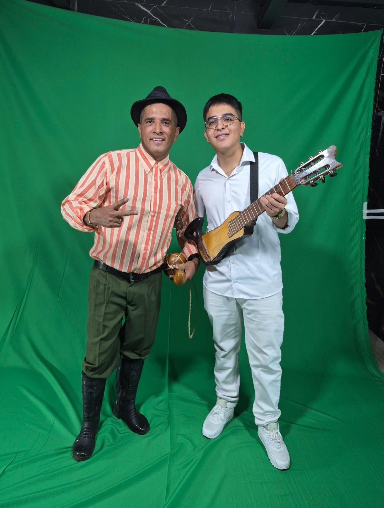
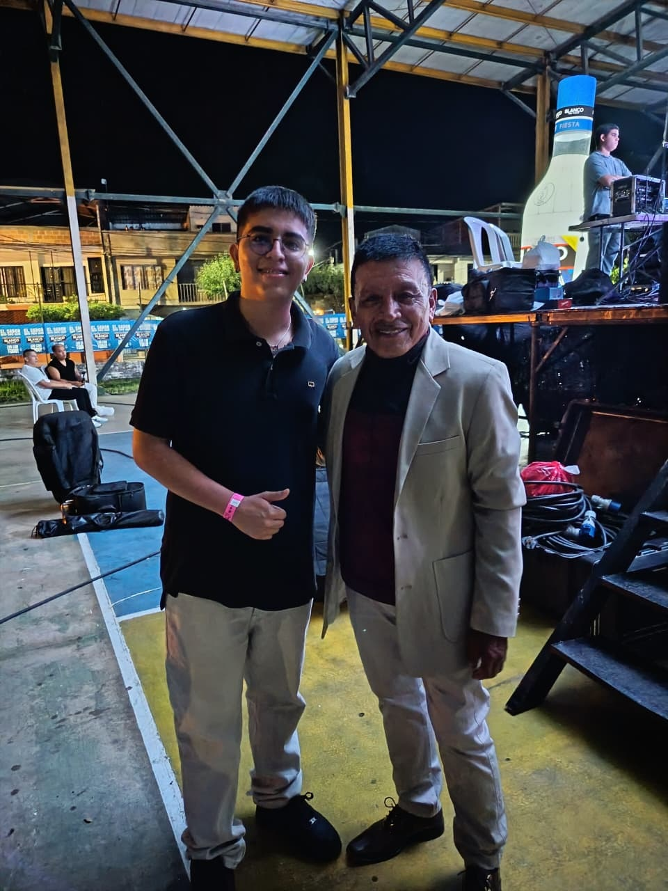
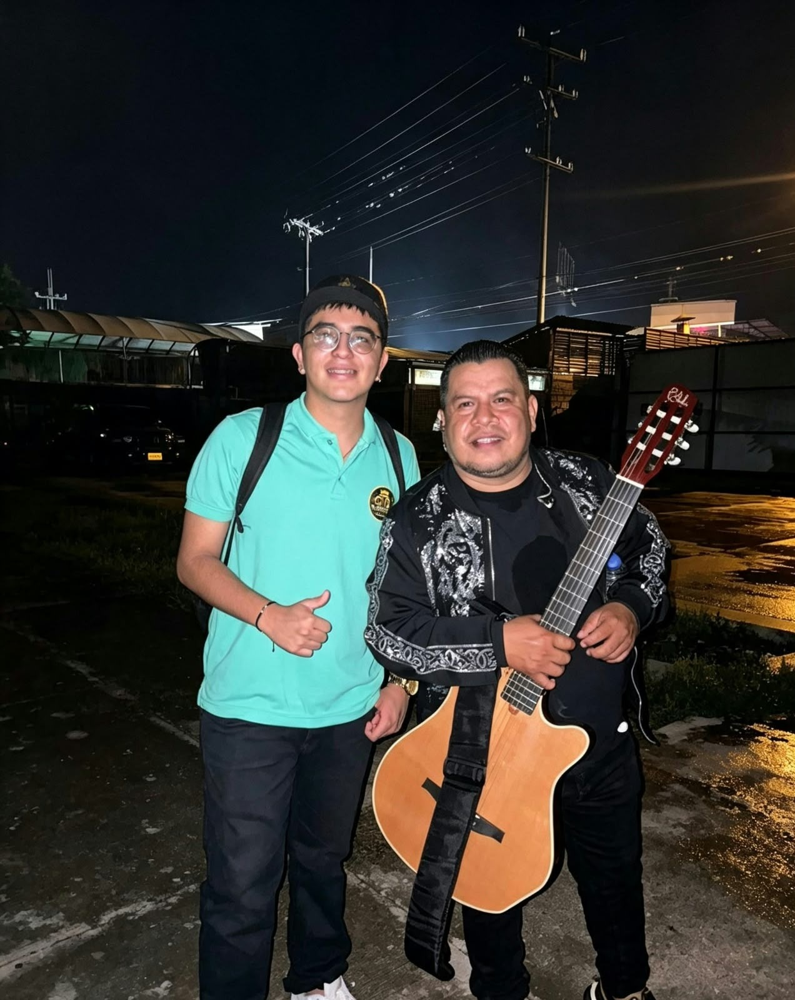
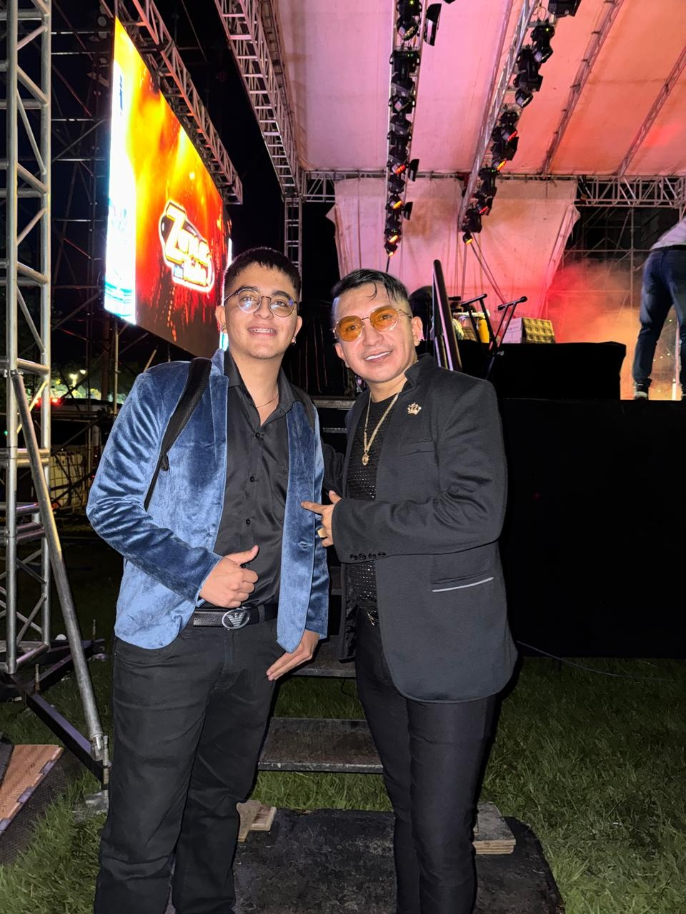

Imágenes y momentos
Galería
Fotografías de Miguel Delgado, sus presentaciones y sus proyectos musicales.










En vídeo
Fotografías de Miguel Delgado, sus presentaciones y sus proyectos musicales.









